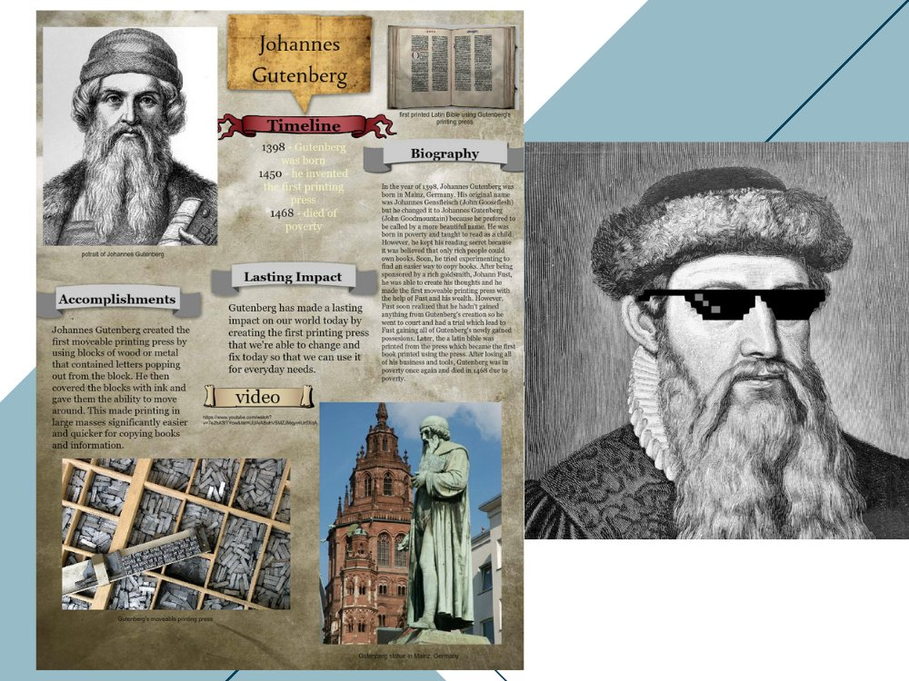
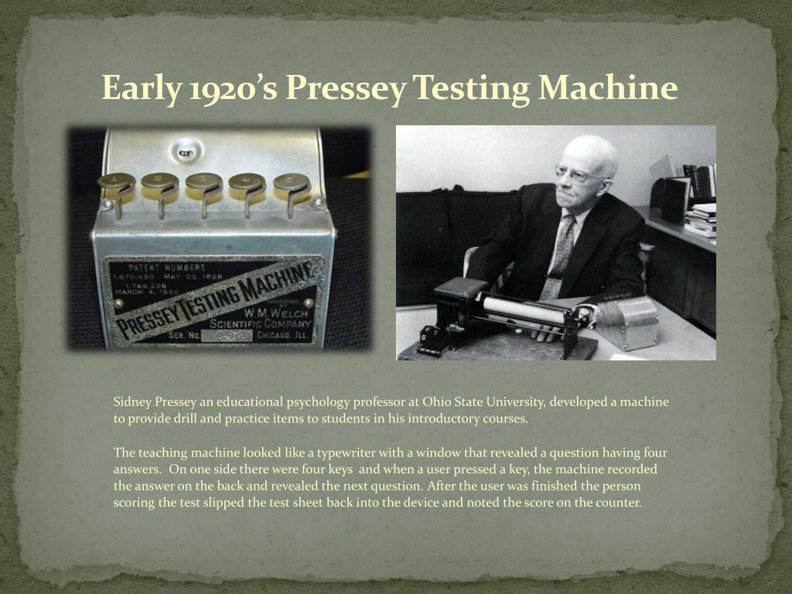

Người thầy là "oracle"
Trong phần lớn lịch sử nhân loại, tri thức được truyền từ người sang người. Triết gia, tu sĩ, học giả, thầy giáo không chỉ truyền đạt kiến thức, họ chính là nơi lưu giữ kiến thức.
Socrates không để lại một trang sách nào. Những gì chúng ta biết về ông chủ yếu đến từ các ghi chép của học trò như Plato. Câu hỏi trung tâm của giáo dục thời kỳ này chỉ có một:
Tại Việt Nam, văn miếu Quốc Tử Giám (1076) là trung tâm giáo dục đầu tiên, nơi các học sĩ nho giáo không chỉ giảng dạy, họ mang tri thức gắn liền với thể xác con người. Tri thức bị khóa chặt trong một cơ thể sinh học, quá trình học tập không thể diễn ra từ xa. Học trò bắt buộc phải lặn lội lên kinh kỳ, bước vào cửa "khổng" sân "trình", quỳ dưới sân để nghe thầy giảng. Thể xác của người học phải ở cùng một không gian vật lý với thể xác của người thầy thì sự "chuyển giao tri thức" mới có thể diễn ra. Cả hệ thống giáo dục phụ thuộc vào sự hiện diện bằng xương bằng thịt của người thầy.
Chiếc máy in giải phóng tri thức.
Khoảng năm 1440, Johannes Gutenberg phát triển công nghệ in chữ rời. Lần đầu tiên trong lịch sử, tri thức có thể được sao chép với quy mô lớn. Câu hỏi trung tâm chuyển thành: làm sao giúp nhiều người học hơn?

Câu hỏi mới lần đầu xuất hiện
Năm 1924, nhà tâm lý học Sidney Pressey tại "Ohio state university" chế tạo "automatic intelligence testing machine(testing-and-teaching machine)" cơ học đầu tiên. Học sinh trả lời câu hỏi, máy kiểm tra đáp án, nhận phản hồi ngay lập tức.
Đây là lần đầu tiên trong lịch sử con người nghiêm túc hỏi: máy móc có thể dạy học không?

Kỷ Nguyên "Intelligent tutoring systems"
Từ thập niên 1970, các nhà nghiên cứu bắt đầu xây dựng những hệ thống tham vọng hơn: SCHOLAR, SOPHIE, AutoTutor, Cognitive Tutors. Mục tiêu là mô hình hóa kiến thức, mô hình hóa trạng thái học sinh, và lựa chọn chiến lược giảng dạy phù hợp.
Kết quả đo được từ các meta-analysis ấn tượng hơn nhiều so với kỳ vọng ban đầu:
Effect size g (Cohen's g). Meta-analysis trên 107 effect sizes, 14.321 học sinh-Ma et al., 2014 · APA.
Internet dân chủ hóa tri thức và mặt trái của nó
YouTube (2005), Khan Academy (2008), Coursera & edX (2012) tất cả đều hứa hẹn với chúng ta: bất kỳ ai, ở bất kỳ đâu đều học được từ giáo sư tốt nhất và miễn phí. Nhưng một nghịch lý cũng đã xuất hiện từ đây.
Khoảng dao động: 0,7% đến 52,1%, coursera "bioelectricity" đã mất 80% học viên trước khi khóa học bắt đầu, chỉ còn 350 chứng chỉ từ 12.700 người đăng ký.
Nhiều nghiên cứu cũng ghi nhận rằng 39% học viên đăng ký MOOC không thực hiện bất kỳ hành động nào trong khóa học (Jansen et al., 2020).
Lịch sử của AI vốn không phải đường thẳng
Nhiều giai đoạn kỳ vọng quá mức đã được theo sau bởi thất vọng tạo ra các "mùa đông AI" (những giai đoạn mà cộng đồng, chính phủ và doanh nghiệp mất niềm tin vào AI, dẫn đến cắt giảm tài trợ, giảm nghiên cứu, giảm đầu tư sau một thời kỳ AI được quảng bá quá mức) trong lịch sử. Nhưng trong giáo dục, AI chưa bao giờ ngừng tồn tại. Nó chỉ liên tục thay hình đổi dạng.
Deep learning và dữ liệu lớn cho phép AI thoát khỏi rule-based để trở nên thực sự adaptive. AI học từ hành vi học sinh, không cần lập trình từng quy tắc.
Generative AI: Người thầy không bao giờ biết mệt
Sự xuất hiện của các mô hình ngôn ngữ lớn tạo ra một thay đổi đáng kể. Lần đầu tiên, hệ thống máy tính có thể đối thoại bằng ngôn ngữ tự nhiên, giải thích cùng một khái niệm theo nhiều cách, và tạo phản hồi theo ngữ cảnh thực sự.

NĂM HỌC 2023-2024
Nguồn: NEA 2025 (giáo viên K-12) · UNESCO 2023 (chính sách trường học).
Thứ mà không AI nào thay được
Lịch sử giáo dục cho thấy một mô hình lặp lại không thể phủ nhận: máy in không loại bỏ giáo viên, internet không loại bỏ giáo viên, ITS không loại bỏ giáo viên, và rõ ràng là "Generative AI" cũng chưa cho thấy bằng chứng rằng nó sẽ làm điều đó.
Như nhà nghiên cứu Simon Doroudi nhận xét trong Springer (2022): "lịch sử AI và giáo dục đã gắn bó với nhau từ những ngày đầu của AI" và mỗi cuộc cách mạng đều làm rõ hơn những thứ chỉ con người mới làm được.
Những gì công nghệ thường làm: tự động hóa một phần công việc, thay đổi vai trò, tái phân phối trách nhiệm trong quá trình học tập, người thầy không biến mất, ngược lại, họ được chắt lọc về bản chất thật sự.